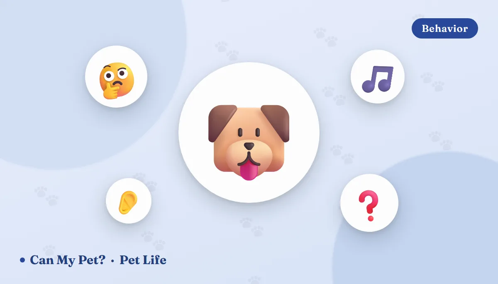

Why Does My Dog Tilt Its Head?

You say a word — walk, or the dog's name, or something you didn't think was interesting at all — and the head goes over at forty-five degrees, ears up, eyes locked on you. It is probably the single most photographed gesture in dog ownership, and it is one of the few everyday dog behaviors that scientists still openly argue about. There are three good explanations, none of which cancels out the others, plus one version of the tilt that is not charming at all and needs a vet. Here's how to tell them apart.
Theory 1: it helps them work out where a sound is coming from
Dogs hear a far wider frequency range than we do — roughly 67 Hz to 45,000 Hz, against our 20 Hz to 20,000 Hz — but they are not dramatically better than humans at pinpointing exactly where a sound originated. Locating a noise depends on tiny differences in when and how loudly it arrives at each ear, and the shape of the outer ear (the pinna) shapes those cues.
Tilting changes the geometry. Rotating the head a few degrees moves each ear to a new elevation and angle, giving the brain a second reading to compare against the first. It's the same reason we turn an ear toward a faint noise. Dogs with heavy drop ears — spaniels, hounds, many retrievers — have the most acoustic interference to work around, which may be part of why they seem such enthusiastic tilters, though nobody has tested that directly.
Theory 2: your muzzle is in the way
The best-known version of this idea comes from psychologist Stanley Coren, who pointed out that a long muzzle physically blocks a chunk of the lower half of a human face when the dog looks straight at you. Since dogs read a great deal from our mouths and expressions, tilting could be a simple workaround: move the snout aside, get a clean view of the face.
Coren tested it with a survey of 582 dog owners. About 71% of long-nosed dogs were reported as frequent tilters, against about 52% of flat-faced breeds. That's a real gap in the predicted direction — but more than half of the pugs and bulldogs tilt too, which means muzzle geometry is at most one contributing factor rather than the answer. If you'd like the wider picture of how dogs read us, our dog body language guide covers what they're watching for.
Theory 3: it's the face of a dog thinking hard
The most interesting evidence arrived almost by accident. A team at Eötvös Loránd University in Budapest, led by Andrea Sommese, was studying "gifted word learners" — the rare dogs who can learn dozens of toy names — and published their findings in Animal Cognition in 2021.
Reviewing months of video, they noticed that when an owner asked for a toy by name, the gifted dogs tilted their heads in roughly 43% of trials. Typical dogs, who hadn't learned the names, tilted in about 2%. The tilt appeared specifically when the dog heard a word it had a mental image for, which suggests the gesture accompanies the effort of matching a sound to a memory — a dog's version of the face you make retrieving a name you almost have.
Two caveats worth keeping. This was an exploratory analysis of a small, unusual sample, so it's a promising lead rather than a settled finding. And it does not mean tilty dogs are smarter dogs — it means those particular dogs were concentrating on a meaningful sound. Plenty of extremely bright dogs never tilt at all.
The favoured-side detail Lateralisation
The same recordings showed individual dogs had a consistent preferred tilt direction, held steady over months and unaffected by where the owner stood. That points to brain lateralisation — the same asymmetry behind the right-biased tail wag dogs produce when they see their owner. Your dog's tilt has a handedness.
And theory 4, the honest one: we taught them
Whatever started the behavior, we have spent generations rewarding it. A dog tilts, a human melts, and the dog gets eye contact, a delighted voice, a scratch, sometimes a snack. That is textbook positive reinforcement, and it is why so many dogs produce the tilt on cue for a phone camera. Nothing about that makes it fake — it simply means the tilt is now partly a learned social move as well as a listening posture.
When the head tilt is a medical sign
This is the part worth remembering. There is a clear line between a momentary tilt during interaction and a persistent tilt the dog carries around. A dog whose head stays cocked while walking, eating, drinking or resting is not listening. Something is wrong with the ear or the balance system.
Call your vet the same day if you see: Red flags
A head tilt held constantly, at rest · stumbling, leaning, falling or circling toward one side · rapid flicking eye movements (nystagmus) · vomiting or apparent motion sickness · persistent head shaking, scratching at one ear, discharge or a bad smell · loss of appetite · facial drooping or a drooping eyelid on one side.
The most common culprits, per VCA Animal Hospitals and veterinary neurology sources:
- Middle or inner ear infection (otitis media/interna) — far and away the most frequent cause. Often follows an untreated outer-ear infection, especially in floppy-eared and allergy-prone dogs.
- Idiopathic vestibular disease — sometimes called "old dog vestibular syndrome." Dramatic sudden onset, no identifiable cause, and it typically improves over days with the worst of it passing in two to three weeks. Frightening to watch, usually not sinister.
- Ear polyps, foreign bodies or masses — a grass seed lodged deep in a canal is a classic summer emergency.
- Trauma, ototoxic drugs, hypothyroidism, or central causes — brainstem lesions, inflammation or tumours are less common but the reason a vet distinguishes peripheral (ear) from central (brain) vestibular disease.
Do not clean, flush or medicate an ear yourself before that appointment. If the eardrum is ruptured — which it may be — over-the-counter drops can do real damage. Just note when it started, which side, and what else changed, and let the vet look with an otoscope.
So what should you do with the cute one?
Enjoy it, and treat it as information. A tilt tells you your dog is engaged and paying attention to you specifically, which is a good moment to ask for something — a recall, a sit, a name game. If you want more of it, the reliable route is a bigger vocabulary: teach the names of two or three toys, use them consistently, and see what happens. That's essentially what the Budapest researchers did, and the tilts came free.
Frequently asked questions
Why does my dog tilt its head when I talk?
Most likely all three of the leading reasons at once: the tilt repositions the ears to help locate the sound, it clears the muzzle out of the way so the dog can see more of your face, and it accompanies the concentration of matching a familiar word to a memory. There's no single confirmed mechanism yet.
Does head tilting mean my dog is smart?
Not on its own. The 2021 study found dogs who'd learned toy names tilted in about 43% of trials versus about 2% for dogs who hadn't — that links the tilt to focused processing of a sound the dog understands, not to general intelligence. A dog who never tilts isn't slower.
Why does my dog always tilt to the same side?
Individual dogs show a consistent preferred direction over months, regardless of where their owner stands, which suggests brain lateralisation — a kind of handedness. That's normal. A one-sided tilt the dog holds at rest is a different thing entirely and points to that ear or that side of the vestibular system.
When should I worry about a head tilt?
When it's constant rather than momentary, or when it comes with stumbling, circling, flicking eyes, vomiting, head shaking or ear odour. Those signs together suggest an inner-ear infection or vestibular disease. Contact your vet the same day.
Do flat-faced breeds tilt less?
A little. Coren's 582-owner survey put frequent tilting at about 71% in long-muzzled dogs and about 52% in flat-faced breeds. Since half the flat-faced dogs still tilt, muzzle length is one factor among several rather than the explanation.
Do cats tilt their heads too?
Rarely, and it means something different. Cats orient with their ears — each pinna rotates up to 180 degrees independently — so they seldom need to move the whole head. A cat holding a persistent tilt is a stronger warning sign than in dogs and usually means ear disease, a polyp, or a vestibular problem. See our cat body language guide for what cats do instead.
By the CanMyPet Editorial Team · Reviewed against AKC and ASPCA behavior guidance, VCA Animal Hospitals and veterinary neurology resources on vestibular disease, and published research including Sommese et al. (2021), Animal Cognition, and survey work by Stanley Coren · Published August 2026.